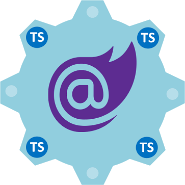

Upcomming Articles
Article 1
This article overviews Single Page Applications
SPA and UI architectures featuring MVU.
Then ventures to Microsoft's .NET Core, Blazor
and MAUI
Article 2

Blazor Typescript Interop is an elegant way to interface your Blazor C# WebAssembly (Wasm).
With the browsers JavaScript API and JavaScript libraries.
Interop is neccessary because Wasm can't reach outside the browser security sandbox.
As there is no direct communication between Wasm and the browser JavaScript API.
This article starts with JavaScript interop then progresses to TypeScript interop.
© Copyright 2021 Warren Browne